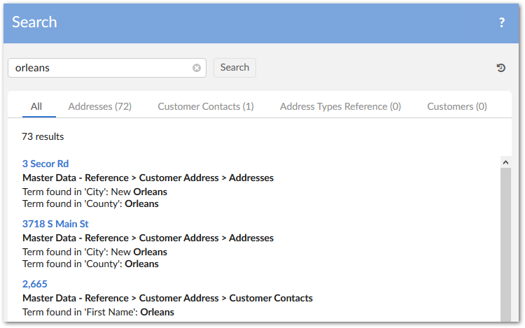
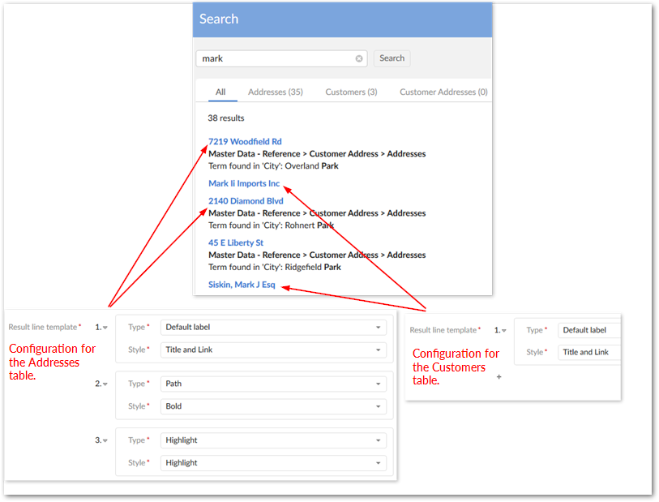
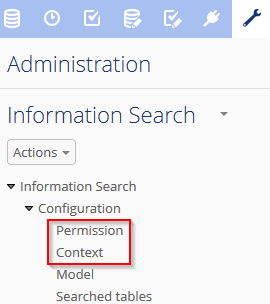
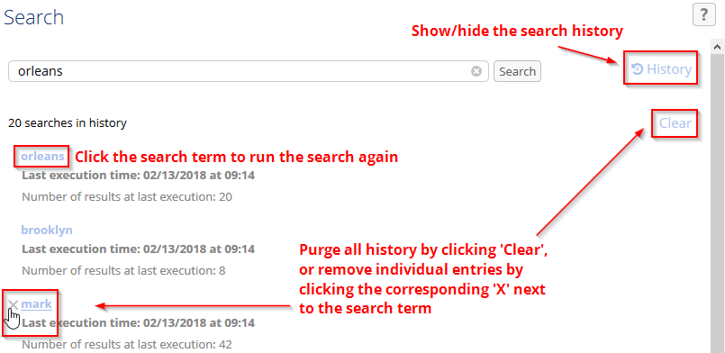
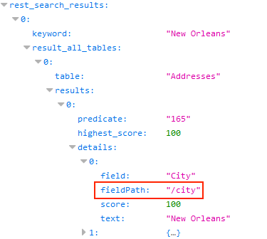
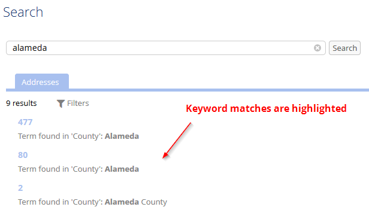

Released: July 2021
Targeted searches now take into account table permission settings.
This release includes no changes to functionality.
This release contains no closed issues.
This release contains the following known issues:
Search can execute on all field types except linked fields and labels of foreign keys or enumerations.
Search with computed values or inherited fields might lead to performance issues.
The use of keywords that contain only special characters is not supported.
Released: March 2021
This release of the TIBCO EBX® Information Search Add-on has been updated to ensure compatibility with the TIBCO EBX® 6.0.0 GA release. Beginning with this release, search capabilities in the EBX® core product were expanded. As a result, the add-on's functional scope is now reduced. See the TIBCO EBX® Release Notes for additional details on the core product's expanded search capabilities.
The add-on still allows you to configure a targeted search (previously global search) across dataspaces and datasets. Additionally, you can create custom configurations to use your own implementation of search templates, synonyms, and stopwords. Note that deployment of this version of the add-on resets the add-on's configuration dataset.
Released: February 2021
[TESE-1243] The add-on executes indexing to cache data continuously when executing a Search operation.
Release Date: October 20, 2020
This release includes support for bug fixes in the TIBCO EBX® Match and Cleanse Add-on (version 2.5.6).
Released: January 2021
The following libraries were updated in this release:
Apache Standard Taglibs library to version 1.2.3.
Spring framework library to version 5.2.9.
Jackson Databind library to version 2.11.2.
This release includes support for bug fixes in the TIBCO EBX® Match and Cleanse Add-on (version 2.5.7).
Release Date: October 20, 2020
This release includes support for bug fixes in the TIBCO EBX® Match and Cleanse Add-on (version 2.5.6).
Release Date: September 18, 2020
This release contains the following new features and optimizations:
An empty line separator has been added between each result in the Search screen.
The add-on has been updated to support the OpenJDK8 libraries.
This release contains the following bug fixes:
[TESE-1145] A blank page is returned when executing a Global search and the user has insufficient permissions.
[TESE-1148] An incorrect highlight is returned when searching a compound keyword.
[TESE-1150] A NumberFormatException occurs when searching a multi-value foreign key field under multi-value group.
[TESE-1151] An incorrect result returned when searching a compound keyword in the multi-value string field and the Best word option is activated.
Release Date: June 23, 2020
This release includes support for new features in the TIBCO EBX® Match and Cleanse Add-on (version 2.5.4).
This release contains the following bug fixes:
[TESE-1144] An incorrect result is returned when searching on a foreign key with a numeric keyword.
[TESE-1146] An incorrect result is returned when executing the Global search operation when the Specific policy property is configured.
Release Date: April 20, 2020
This release contains the following new features:
The add-on can now display custom table labels on search results. You can use this feature to clarify search result display. For example, a global search might include results from tables with the same name but that come from different data models. In this case, a custom label could help differentiate between tables by naming each table's containing model. Administrators set the custom label using a configured table's Label option.
It is now possible to search a label of a String enumeration field.
This release contains the following bug fixes:
[TESE-1119] An incorrect result is returned when searching on a raw-value of a foreign key.
[TESE-1121] An incorrect result is returned when searching on an enumeration field of the Integer, Date and HTML data types.
[TESE-1124] An incorrect result is returned when searching on a dataset through REST.
[TESE-1135] An incorrect result is returned when searching on an external foreign key and the Best word property is activated.
Release Date: January 15, 2020
The TIBCO EBX® Information Search Add-on no longer ships with certain third-party Limited General Public License (LGPL) libraries. You must re-package the add-on before you can successfully deploy it. The add-on bundle includes a script to automate this process. Please see the TIBCO EBX® Add-ons Versioning and Packaging Guide for detailed instructions. You can find this guide in the PDF documents included with your add-on bundle, or on https://docs.tibco.com under the page dedicated to the TIBCO EBX® 4.3.2 Add-ons Bundle.
This release contains the following bug fixes:
[TESE-1027] An incorrect result is returned when executing a Search operation in a dataspace after merging a child dataspace.
Release Date: December 10, 2019
This release includes support for bug fixes in the TIBCO EBX® Match and Cleanse Add-on (version 2.5.1).
Release Date: November 8, 2019
The Contains search algorithm is now available for use. This algorithm finds data containing the keyword. It is not case-sensitive.
This release contains the following bug fixes:
[TESE-998] An incorrect result is returned when searching on a foreign key with a tabular filter.
[TESE-1001] An incorrect result is returned when searching on a parent dataspace after merging a child dataspace.
Release Date: June 20, 2019
This release includes support for new features in the TIBCO EBX® Match and Cleanse Add-on (version 2.4.0).
[TESE-977] A concurrent issue occurs when executing multiple search threads on a table at the same time.
[TESE-990] A NullPointerException occurs when executing a programmatic search.
Release Date: March 25, 2019
The new features and updates for this release are described in the following sections:
This release contains the following new features and updates:
Add-on configuration settings have been moved under Administration > Data quality & analytics > TIBCO EBX® Information Search Add-on.
When using the Search table filter, the configured primary and secondary search algorithms are now applied.
One of the following options can be selected when configuring the add-on to use synonyms during search:
Use synonyms for the entire value of the attribute: This option compares synonyms with the entire word or phrase being searched. Take fore example the following group of synonyms: "Mr", "Mister", and "Sir". Taken as a whole, the search phrase "Mr. Bob Smith" may not match close enough to trigger results. However, if the entire search term was "Sir", it could return the record for "Sir Bob Smith".
Use synonyms for every words of the attribute: This option compares synonyms with each part of a phrase being searched. Using the above example, the search phrase "Mr. Bob Smith" could return "Sir Bob Smith" as a result.
The Best word option is now disabled when the keyword is surrounded by double quotes.
This release contains support for new features in the TIBCO EBX® GO for iOS and TIBCO EBX® GO for Android mobile applications.
This release includes the following UI updates and enhancements:
Search result tabs now display, and are ordered according to the number of results:

Search result display can now be configured by administrators. Each line of a search result can be customized according to order of display, content, and formatting. The image below shows an example of different configurations for two tables:

This release contains the following bug fixes:
[TESE-885] The results display incorrectly when executing Global search and the Results sorted by property is set to Field order.
[TESE-887] An error message is displayed when users configure the parent group for a synonym group.
Release Date: December 13, 2018
This release contains the following updates and enhancements:
Memory usage has been enhanced when loading the cache.
Release Date: October 26, 2018
This release contains the following updates and enhancements:
The EBX® Information Search Add-on has undergone significant updates to ensure compatibility with the EBX® 5.9.0 GA release.
To use the Global Search service within a perspective, you must now specify a value for the Dataspace parameter during configuration.
Release Date: October 12, 2018
[36046] A 404 error is returned when opening the Search view on a WebLogic server.
Release Date: October 5, 2018
[35714] The search result is incorrectly highlighted when using the Best word option, and there are at least two words that match the keyword.
Release Date: September 13, 2018
[35409] A Null pointer exception occurs when updating a Filter by field that was empty.
Release Date: July 31, 2018
You can now search on a string field containing only numeric characters.
[34369] A ClassCastException is thrown when searching with two algorithms and the Primary search algorithm returns no results.
Release Date: July 17, 2018
It is now possible to define the display order for search results.
[32526] A blank page is displayed when searching with the Best word option.
[33877] A ClassCastException error occurs when searching with the Levenshtein algorithm and the Best word option activated.
Release Date: June 22, 2018
This release includes support for new features in the TIBCO EBX® GO Add-on.
[32779] An incorrect result is returned when applying a search filter that has no columns selected.
Release Date: April 20, 2018
This release includes support for new features in the Match and Cleanse Add-on (version 2.1.0).
Release Date: March 28, 2018
[31696] The cache is not updated when updating data on foreign key tables.
Release Date: March 16, 2018
This release includes the new global search feature. With this feature, searches can span multiple dataspaces and datasets. Global search is accessed from the main toolbar, which lifts the requirement that users navigate to the dataset or table they want to search.
When configuring global search, administrators create contexts that point to tables, and link the contexts with profiles. Note that in order to include a table in a context, it must already be configured in the add-on for localized dataset and table searches. The image below highlights the location of new tables used to configure global search.

The global search feature can be used when searching via a REST request. Additionally, global search is available as a perspective action and workflow task. For more information on using and configuring global search, see:
This release contains the following updates and improvements:
The Maximum No. of results field has been moved to the User preference table. All previous configurations for this field have been reset to the default value of unbounded.
You can now clear your own history. As shown below, individual entries can be removed, or you can completely reset your history:

The Check permission option has been removed from the Model table, and permissions are now checked by default. This option is still included in the search APIs and you can enable/disable permission check via APIs.
The table search filter appearance has been updated.
New APIs are available to search at the repository level and within a user's history.
In the SOAP and REST search services, the sensibility parameter has been updated to sensitivity. Both parameters are still supported for backwards compatibility.
The field path is now included in the search result returned by REST service.

The tokens in search results that match with the keyword are now highlighted.

Search is now included as perspective actions and workflow tasks.
[30399] Searching on a foreign key field in a multi-valued group returns no results after changing the EBX® Information Search Add-on configuration.
[30400] An error message is displayed when searching with the Date data type using REST service.
[30531] The label and description of records in the Algorithm table cannot be updated.
Release Date: February 28, 2018
A new method that allows you to scan all of a table's records when using a custom search algorithm has been added to SearchComparator in the API.
[31003] You cannot use a search keyword that contains numeric values when using the custom distance algorithm.
Release Date: January 31, 2018
This release includes support for new features and bug fixes in Match and Cleanse Add-on 1.13.0.
[30440] A search on a dataset cannot be completed when searching on two tables with foreign keys referring to each other.
Release Date: December 22, 2017
This release contains the following new features:
Support of case sensitive search has been added for all Match and Cleanse Add-on algorithms.
Release Date: December 15, 2017
This release contains the following new features:
Support for global search in the TIBCO EBX® GO Add-on.
Memory usage when loading the cache has been optimized.
Release Date: November 10, 2017
[29359] Bugs fixed in Match and Cleanse Add-on 1.12.0.
Release Date: October 16, 2017
[22743] It is now possible to modify pre-built algorithm parameters.
[22768] You can now perform a search at table level.
[26295] Search has been optimized to remove irrelevant results.
[26551] There is a new search UI and search result format.
[26555] You can now store/display search history.
[26557] You now have the ability to filter search results.
[26559] A new service allows you to purge the search history.
[26640] The Maximum No. of results property in the Model table has been updated to apply at the record level.
[26663] Some tables and fields that are no longer used were removed from search configuration.
[26849] The add-on no longer supports relational models.
[26857] Search performance has been optimized by using a cache mechanism.
[27705] Searching with special characters is not supported.
[27954] A new API has been added to preload the cache.
[26468] Searching in a list returns an incorrect score.
[27561] An association field can be registered with EBX® Information Search Add-on.
[27956] A blank page is displayed when searching with the EBX® table filter and Check permissions deactivated.
[28520]An error occurs when performing a search using REST service on a multi-valued field that is a number data type.
Release Date: August 2, 2017
[24249] When searching via the API, you can get the schema node that leads to the record being returned in the result.
Release Date: April 18, 2017
[25012] Search performance on surrogate fields was improved.
[25008] The tab in the search UI is not selectable if a table label contains special characters.
Release Date: March 20, 2017
[24855] The Preview button does not work when including EBX® Information Search Add-on in a specific portal.
Release Date: January 23, 2017
[23695] A new surrogate field matching was added.
[23885] Soap WS fails when search results do not contain additional scores.
Release Date: December 16, 2016
[23528] Search performance for the predicate filter has been improved.
[23252] Null value options are not taken into account during relational matching.
Release Date: November 18, 2016
[23005] Crosswalk search results are updated when searching with multiple target tables.
[23061] Data indexing has been optimized for lower memory usage.
Release Date: October 12, 2016
[14900] An option is available to search in fields via the API.
[17904] All the search algorithm parameters now have clear labels and descriptions.
[18048] It is possible to search using REST.
[20111] Japanese search algorithms are now available.
[20747] Synonym management functionality was added to enhance search flexibility.
[21541] The table filter is automatically applied when searching at table level.
[22216] Search now can be initiated outside a Procedure.
[21995] Search performance on multiple fields was improved.
[22107] Indexing data was optimized to improve search performance.
[21690] A JavaScript error is displayed when choosing 'Metadata' option in the Search box.
[21695] Incorrect behavior in the 'Keyword' table when searching with keyword is long text and contain spaces.
Release Date: September 9, 2016
[21415] Null values are now taken into account when executing matching with any algorithms.
[21416] It is possible to match on multiple fields in crosswalk.
Release Date: August 4, 2016
[21363] Searching a foreign key field in an external dataset using a combination of programmatic label and Levenshtein, JaroWinkler, or NGram algorithm returns an incorrect result.
Release Date: July 8, 2016
[21045] Incorrect search result when searching on inherited fields or computed value fields.
Release Date: June 10, 2016
[20678] When performing a metadata search, the web view was unable to display long table labels.
[20679] The search UI did not display the horizontal scroll-bar for the table and field lists when their labels were excessively long.
Release Date: May 19, 2016
Improve performance by enabling permission checking in the search configuration.
Release Date: April 13, 2016
Instead of using a dataspace and dataset to point to a data model (that you want to enable EBX® Information Search Add-on on) you only need to specify the data model.
It is now possible to make changes to algorithm parameters.
Searches on fields that are integer, decimal, date or date time data types are allowed.
A primary and a secondary algorithm can be used in a search.
The 'Best word' option is integrated in distance searches such as: Levenshtein and Jarowinkler.
The default value for the 'Search criteria on data' table's 'Check permission' property is now 'Yes'.
[14201] The HTML values are saved in the 'Result' table located under 'EBX® Information Search Add-on configuration'.
[19714] The field's label is not displayed in the result when the foreign key field is one of the fields being searched.
[19787] A waiting prompt occurs when searching on the hidden dataset.
[19810] The table label does not change in the search panel when changing the label's table in Information Governance Add-on.
[19852] Search cannot be performed on an enumeration field.
[19864] Searching on an enumeration field defined by the 'Label' field value does not work correctly.
[19996] There is a performance problem when searching with distance algorithms.
Release Date: February 26, 2016
Access rules can now be taken into consideration when searching.
[19428] An exception is raised when more than one search executes simultaneously on multiple fields.
[19429] A JavaScript error occurs when searching in the Internet Explorer 8 browser.
Release Date: February 4, 2016
[19191] Records with scores lower than the min score threshold are returned.
[19293] The redundant '&' character is displayed in the generated URL when searching in the Web view.
Release Date: January 18, 2016
[18486] A runtime exception occurs when running the table filter on EBX®'s search panel.
[18061] Invalid format warnings for WSDL file.
[19018] An incorrect score is returned when searching on more than one field and when a field has a score lower than the minScore threshold.
Release Date: January 7, 2016
[18757] Incorrect score is returned when the search keyword contains special characters.
Release Date: November 3, 2015
In case you need to ignore some characters, words in the information used to search, you can now configure filters as direct values or through a custom Java class.
It is now possible to set an XPath filter in the SearchContext API in order to reduce the scope of the search.
Release Date: October 9, 2015
When searching via API or Web Service you can specify whether to store results.
You can execute a search on a multi-value field inside a terminal group.
You can execute a search on a multi-value field inside a multi-value group.
[17565] A search returns an empty result when performed on a foreign key field using a programmatic label.
Searching process has been optimized.
Release Date: September 3, 2015
[17503] Searching simple fields under a terminal group may return an incorrect score.
[17504] Searching simple fields under a multi-value group returns an incorrect score.
Searching based on a multi-value field inside a terminal group is not supported.
Searching based on a multi-value field inside a multi-value group is not supported.
Release Date: July 31, 2015
Accept filter with predicate when searching in group.
It is now possible to retrieve the search configuration associated to a dataset.
Release Date: June 29, 2015
You can now define a custom distance algorithm on any simple type.
Release Date: June 10, 2015
EBX® Information Search Add-on can now be used to extend the EBX® table filter. It allows user to apply the fuzzy search from the table search UI component.
A new web service allows user to expose searching.
Release Date: May 6, 2015
[15943] In case of many similarities between more records than the number of records searched for (for instance the cluster size in Matching), results can be inconsistent. It is especially true in funneling mode.
Release Date: April 15, 2015
Fix the API in order to be used within a trigger or a procedure.
Release Date: January 26, 2015
When deleting a configuration in the 'Search criteria on data', the system now applies a delete 'on cascade' of all the related records in the 'Table' and 'Field' tables. This change simplifies the administration process of removing a search configuration.
The 'Similarity' and 'Prefix length' properties are now configured only when the 'FuzzyFullText' algorithm is selected.
The search result UI is improved and allows you to preview records.
Release Date: January 22, 2015
Add the possibility to define filters to normalize values when searching.
Release Date: January 19, 2015
[14213] The option best word is not taken into account.
Release Date: November 10, 2014
Add Chinese search algorithm.
Release Date: October 10, 2014
[12833] The configuration of the search is not unique for a same data model.
[12568] The creation of new record in Result table of TIBCO EBX® Information Search Add-on dataspace is enabled.
Update the display of fields in configuration.
Release Date: September 12, 2014
[12526] Exception when searching with null foreign key using 'Exact algorithm'.
Release Date: August 29, 2014
It is now possible to create custom distance algorithms. See the API documentation for more information. It can be used only in Match and Cleanse Add-on.
The performances have been improved.
Release Date: June 19, 2014
Some drastic improvement of the performances have been done.
Release Date: June 3, 2014
It is now possible to search a 'best word' among a long text such as a description. With this option, the score of the search is based on the sole matching against the search criteria. It is no longer the average score based on the number of words in the targeted text.
Release Date: April 7, 2014
Search panel background color does not follow the 'Colors and themes' from the general preferences.
Release Date: Dec 19, 2013
EBX® Information Search Add-on allows retrieving data anywhere in the repository. The search is multi-table-oriented. This means that the result of a search query is a collection of data sourced from one or multiple tables. The ability to search over a set of tables allows querying a large scope of information, similar to a web search engine.
The search query is based on a fuzzy execution retrieves information even if the search criteria do not match the data exactly. For example, the search criterion 'John' will return information such as 'Jone', 'Johnson', 'Cohn' depending on the configuration of the search engine. This configuration allows for tuning the search to avoid unwanted results and for deciding which fuzzy search policies to apply (phonetics, distance).
EBX® Information Search Add-on allows for retrieving information not only on data value of the repository but also on meta-data, namely the data models and workflow descriptions.
All tables in a dataset.
Phonetics and distance.
Generic tabular view and web view.